Terminal tipo quiosque na entrada da empresa. O funcionário olha para a câmera e toca em um botão.
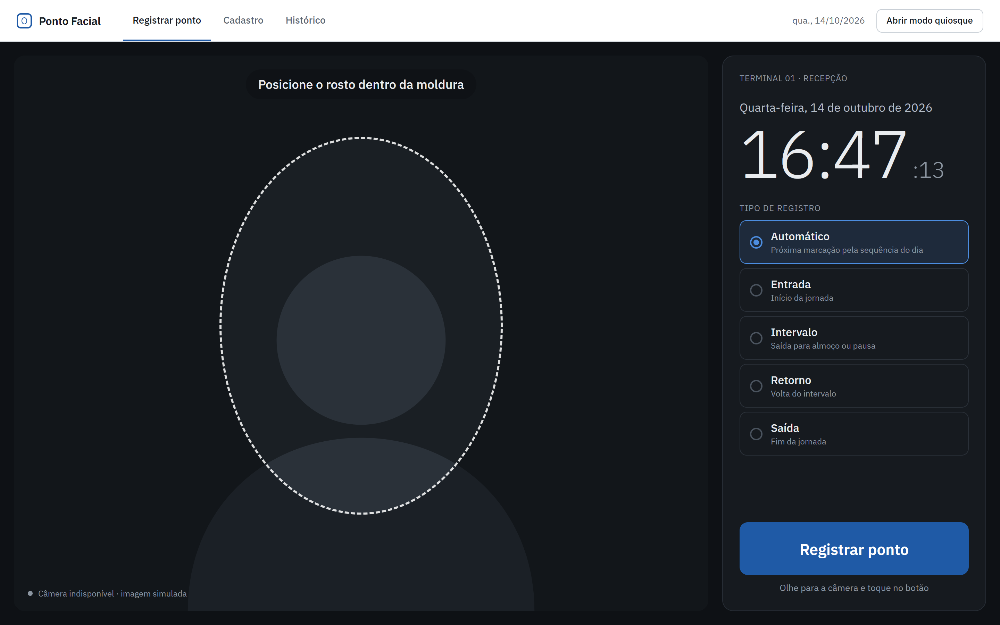
Câmera ativa e moldura de enquadramento. O tipo "Automático" segue a sequência do dia.
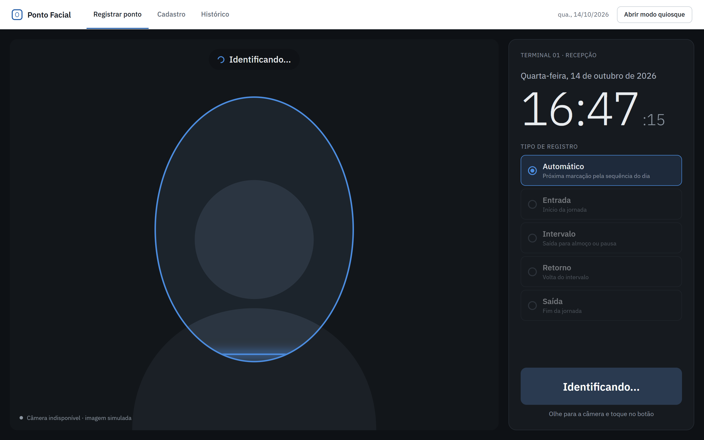
Imagem enviada para a API em Python; o DeepFace compara o rosto com os cadastrados.
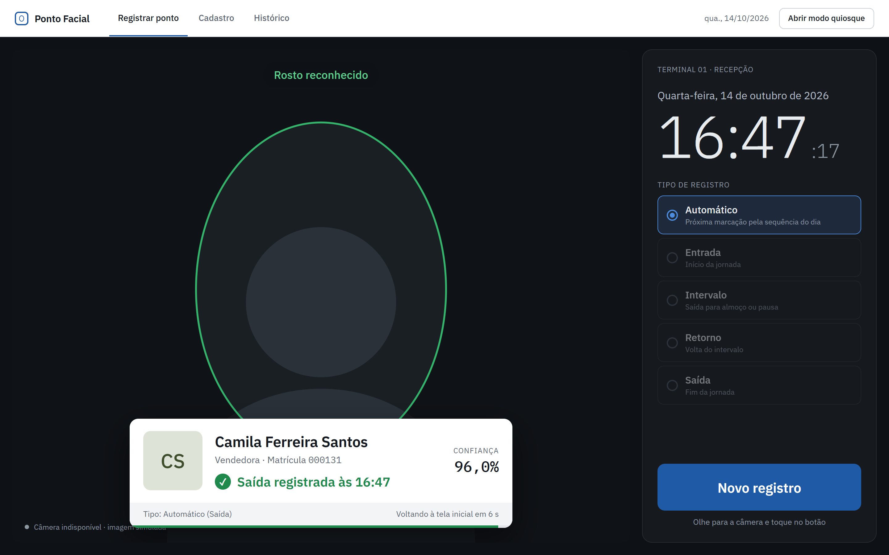
Funcionário identificado: nome, cargo, tipo e horário gravados no banco, com o nível de confiança.
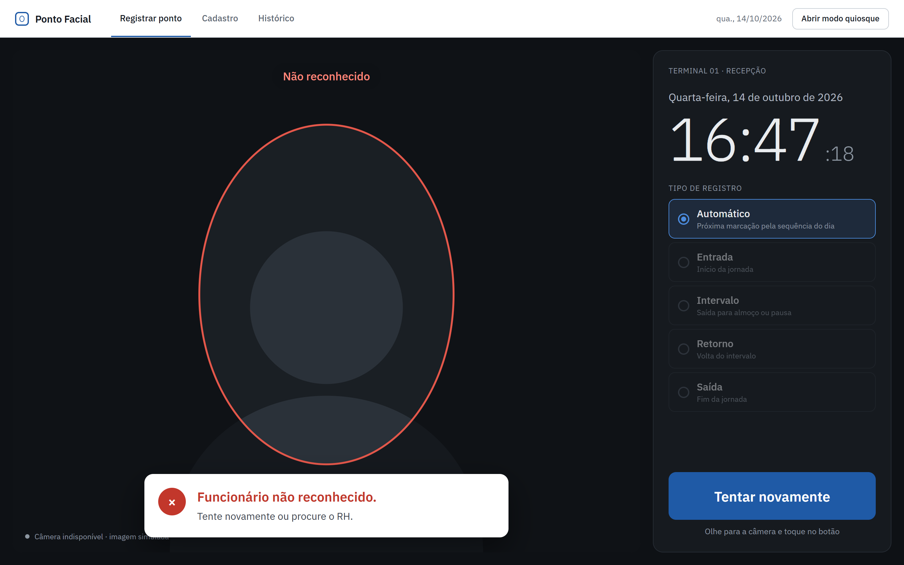
Nenhum cadastro próximo o suficiente do rosto capturado.
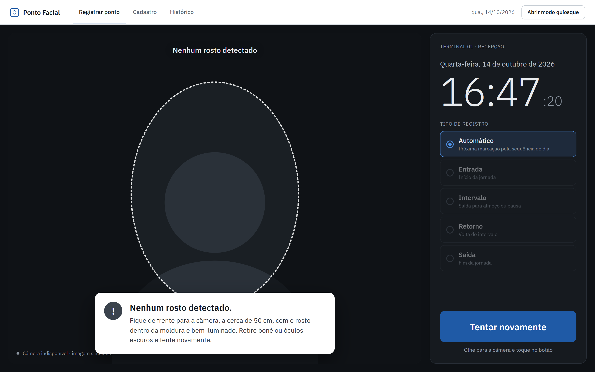
Orienta o funcionário a se posicionar de frente para a câmera.
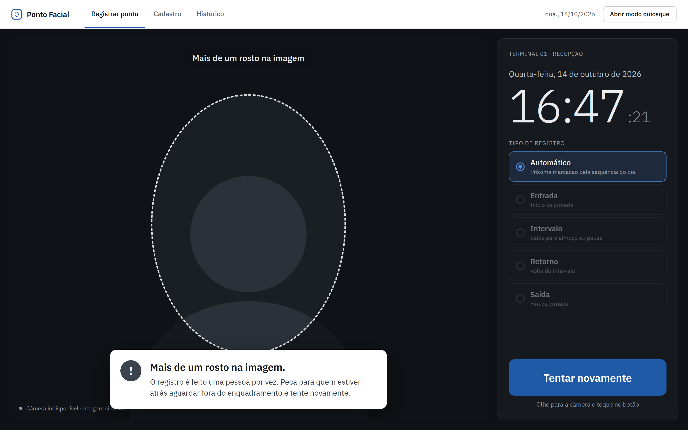
O registro é individual; pede para os demais saírem do enquadramento.
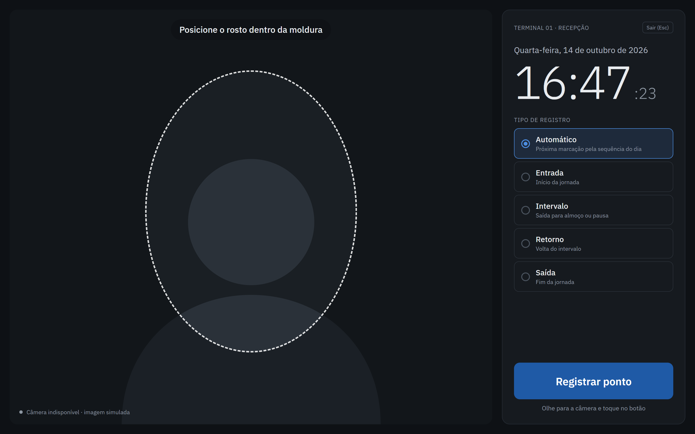
Tela cheia, sem menu, para o tablet fixo na parede.
Nome, matrícula, cargo e a foto de referência usada pelo reconhecimento facial.
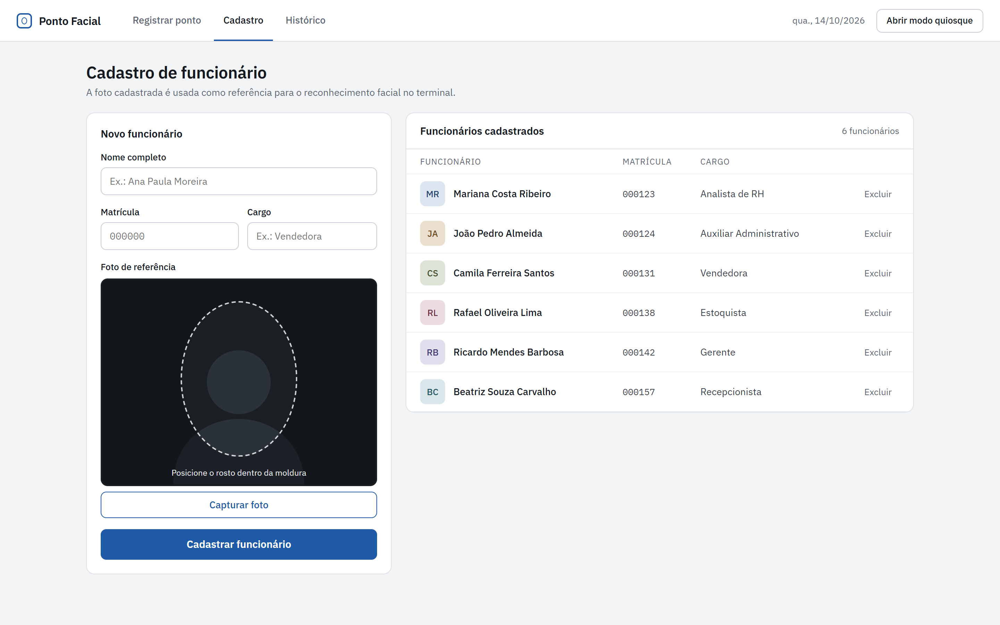
Câmera ao vivo para capturar a foto de referência e lista dos cadastrados.
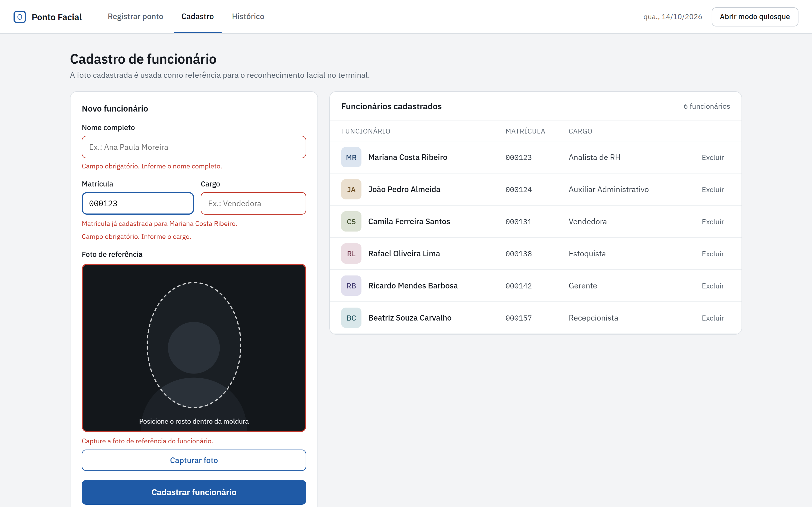
Campos obrigatórios, matrícula já cadastrada e foto ausente.
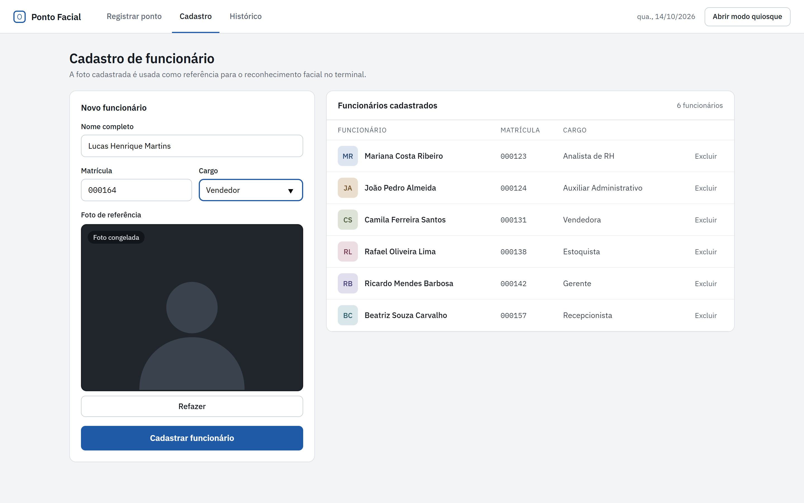
Foto congelada com opção de refazer antes de cadastrar.
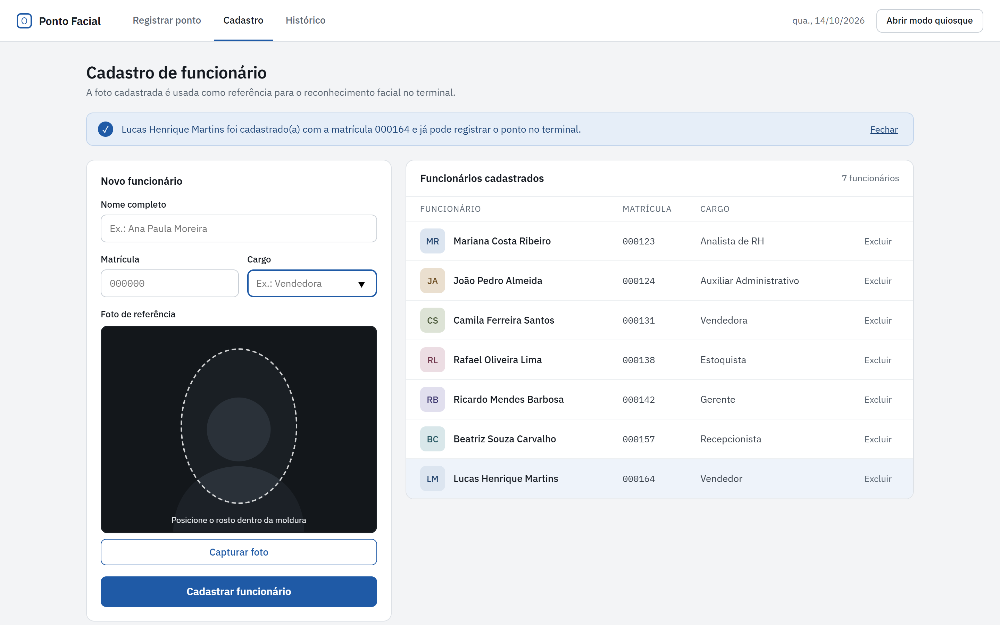
Funcionário entra na lista e já pode registrar o ponto.
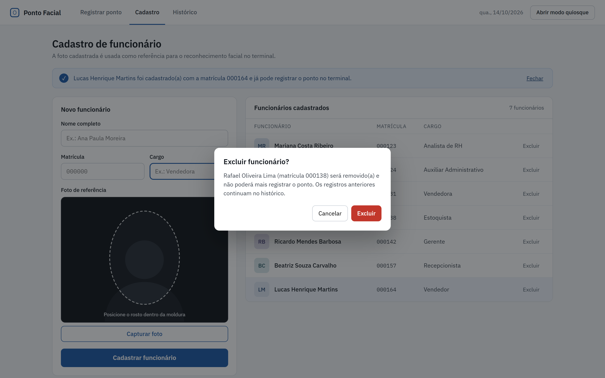
Remove o funcionário mantendo os registros antigos no histórico.
Consulta das marcações por data, com busca por nome ou matrícula.
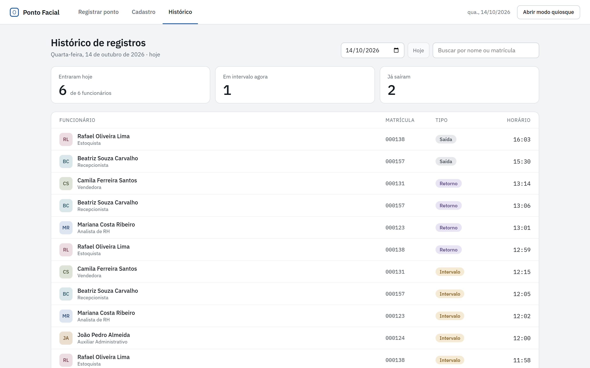
Resumo de quem entrou, está em intervalo e já saiu, e a lista de marcações.
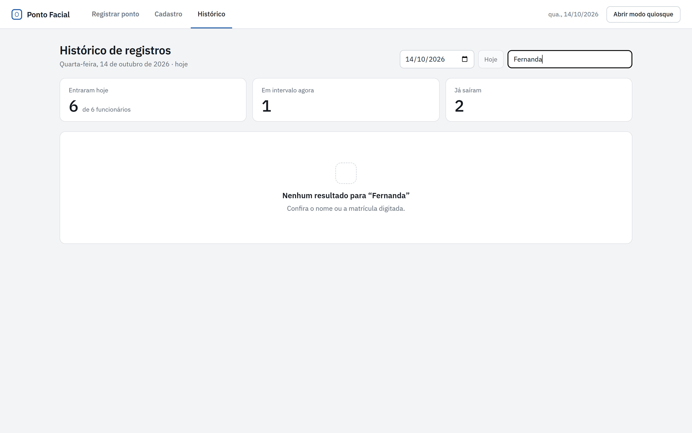
Estado vazio quando a busca não encontra ninguém.